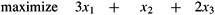
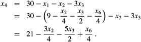
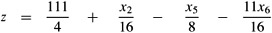

|
|
< Day Day Up > |
|
The simplex algorithm is the classical method for solving linear programs. In contrast to most of the other algorithms in this book, its running time is not polynomial in the worst case. It does yield insight into linear programs, however, and is often remarkably fast in practice.
In addition to having a geometric interpretation, described earlier in this chapter, the simplex algorithm bears some similarity to Gaussian elimination, discussed in Section 28.3. Gaussian elimination begins with a system of linear equalities whose solution is unknown. In each iteration, we rewrite this system in a equivalent form that has some additional structure. After some number of iterations, we have rewritten the system so that the solution is simple to obtain. The simplex algorithm proceeds in a similar manner, and we can view it as Gaussian elimination for inequalities.
We now describe the main idea behind an iteration of the simplex algorithm. Associated with each iteration will be a "basic solution" that is easily obtained from the slack form of the linear program: set each nonbasic variable to 0, and compute the values of the basic variables from the equality constraints. A basic solution will always correspond to a vertex of the simplex. Algebraically, an iteration converts one slack form into an equivalent slack form. The objective value of the associated basic feasible solution will be no less than that at the previous iteration (and usually greater). To achieve this increase in the objective value, we choose a nonbasic variable such that if we were to increase that variable's value from 0, then the objective value would increase too. The amount by which we can increase the variable is limited by the other constraints. In particular, we raise it until some basic variable becomes 0. We then rewrite the slack form, exchanging the roles of that basic variable and the chosen nonbasic variable. Although we have used a particular setting of the variables to guide the algorithm, and we shall use it in our proofs, the algorithm does not explicitly maintain this solution. It simply rewrites the linear program until the optimal solution becomes "obvious."
We begin with an extended example. Consider the following linear program in standard form:
| (29.56) |  |
subject to
| (29.60) |
In order to use the simplex algorithm, we must convert the linear program into slack form; we saw how to do so in Section 29.1. In addition to being an algebraic manipulation, slack is a useful algorithmic concept. Recalling from Section 29.1 that each variable has a corresponding nonnegativity constraint, we say that an equality constraint is tight for a particular setting of its nonbasic variables if they cause the constraint's basic variable to become 0. Similarly, a setting of the nonbasic variables that would make a basic variable become negative violates that constraint. Thus, the slack variables explicitly maintain how far each constraint is from being tight, and so they help to determine how much we can increase values of nonbasic values without violating any constraints.
Associating the slack variables x4, x5, and x6 with inequalities (29.57)-(29.59), respectively, and putting the linear program into slack form, we obtain
The system of constraints (29.62)-(29.64) has 3 equations and 6 variables. Any setting of the variables x1, x2, and x3 defines values for x4, x5, and x6; there are therefore an infinite number of solutions to this system of equations. A solution is feasible if all of x1, x2, ..., x6 are nonnegative, and there can be an infinite number of feasible solutions as well. The infinite number of possible solutions to a system such as this one will be useful in later proofs. We will focus on the basic solution: set all the (nonbasic) variables on the right-hand side to 0 and then compute the values of the (basic) variables on the left-hand side. In this example, the basic solution is and it has objective value z = (3 · 0) + (1 · 0) + (2 · 0) = 0. Observe that this basic solution sets for each i ∈ B. An iteration of the simplex algorithm will rewrite the set of equations and the objective function so as to put a different set of variables on the right-hand side. Thus, there will be a different basic solution associated with the rewritten problem. We emphasize that the rewrite does not in any way change the underlying linear-programming problem; the problem at one iteration has the identical set of feasible solutions as the problem at the previous iteration. The problem does, however, have a different basic solution than that of the previous iteration.
If a basic solution is also feasible, we call it a basic feasible solution. During the running of the simplex algorithm, the basic solution will almost always be a basic feasible solution. We shall see in Section 29.5, however, that for the first few iterations of the simplex algorithm, the basic solution may not be feasible.
Our goal, in each iteration, is to reformulate the linear program so that the basic solution has a greater objective value. We select a nonbasic variable xe whose coefficient in the objective function is positive, and we increase the value of xe as much as possible without violating any of the constraints. The variable xe becomes basic, and some other variable xl becomes nonbasic. The values of other basic variables and of the objective function may also change.
To continue the example, let's think about increasing the value of x1. As we increase x1, the values of x4, x5, and x6 all decrease. Because we have a nonnegativity constraint for each variable, we cannot allow any of them to become negative. If x1 increases above 30, then x4 becomes negative, while x5 and x6 become negative when x1 increases above 12 and 9 respectively. The third constraint (29.64) is the tightest constraint, and it limits how much we can increase x1. We will, therefore, switch the roles of x1 and x6. We solve equation (29.64) for x1 and obtain
To rewrite the other equations with x6 on the right-hand side, we substitute for x1 using equation (29.65). Doing so for equation (29.62), we obtain
| (29.66) |  |
Similarly, we can combine equation (29.65) with constraint (29.63) and with objective function (29.61) to rewrite our linear program in the following form:
| (29.67) |
We call this operation a pivot. As demonstrated above, a pivot chooses a nonbasic variable xe, called the entering variable, and a basic variable xl, called the leaving variable, and exchanges their roles.
The linear program described in (29.67)-(29.70) is equivalent to the linear program described in equations (29.61)-(29.64). The operations we perform in the simplex algorithm are rewriting equations so that variables move between the left-hand side and the right-hand side, and substituting one equation into another. The first operation trivially creates an equivalent problem, and the second, by elementary linear algebra, also creates an equivalent problem.
To demonstrate this equivalence, observe that our original basic solution (0, 0, 0, 30, 24, 36) satisfies the new equations (29.68)-(29.70) and has objective value 27 + (1/4) · 0 + (1/2) · 0 - (3/4) · 36 = 0. The basic solution associated with the new linear program sets the nonbasic values to 0 and is (9, 0, 0, 21, 6, 0), with objective value z = 27. Simple arithmetic verifies that this solution also satisfies equations (29.62)-(29.64) and, when plugged into objective function (29.61), has objective value (3 · 9) + (1 · 0) + (2 · 0) = 27.
Continuing the example, we wish to find a new variable whose value we wish to increase. We do not want to increase x6, since as its value increases, the objective value decreases. We can attempt to increase either x2 or x3; we will choose x3. How far can we increase x3 without violating any of the constraints? Constraint (29.68) limits it to 18, constraint (29.69) limits it to 42/5, and constraint (29.70) limits it to 3/2. The third constraint is again the tightest one, and we will therefore rewrite the third constraint so that x3 is on the left-hand side and x5 is on the right-hand side. We then substitute this new equation into equations (29.67)-(29.69) and obtain the new, but equivalent, system
| (29.71) |  |
| (29.72) |
This system has the associated basic solution (33/4, 0, 3/2, 69/4, 0, 0), with objective value 111/4. Now the only way to increase the objective value is to increase x2. The three constraints give upper bounds of 132, 4, and ∞, respectively. (The upper bound of ∞ from constraint (29.74) is because as we increase x2, the value of the basic variable x4 increases also. This constraint, therefore, places no restriction on how much x2 can be increased.) We increase x2 to 4, and it becomes nonbasic. Then we solve equation (29.73) for x2 and substitute in the other equations to obtain
| (29.75) |
| (29.76) |
| (29.77) |
| (29.78) |
At this point, all coefficients in the objective function are negative. As we shall see later in this chapter, this situation occurs only when we have rewritten the linear program so that the basic solution is an optimal solution. Thus, for this problem, the solution (8, 4, 0, 18, 0, 0), with objective value 28, is optimal. We can now return to our original linear program given in (29.56)-(29.60). The only variables in the original linear program are x1, x2, and x3, and so our solution is x1 = 8, x2 = 4, and x3 = 0, with objective value (3 · 8) + (1 · 4) + (2 · 0) = 28. Note that the values of the slack variables in the final solution measure how much slack is in each inequality. Slack variable x4 is 18, and in inequality (29.57), the left-hand side, with value 8 + 4 + 0 = 12, is 18 less than the right-hand side of 30. Slack variables x5 and x6 are 0 and indeed, in inequalities (29.58) and (29.59), the left-hand and right-hand sides are equal. Observe also that even though the coefficients in the original slack form are integral, the coefficients in the other linear programs are not necessarily integral, and the intermediate solutions are not necessarily integral. Furthermore, the final solution to a linear program need not be integral; it is purely coincidental that this example has an integral solution.
We now formalize the procedure for pivoting. The procedure PIVOT takes as input a slack form, given by the tuple (N, B, A, b, c, v), the index l of the leaving variable xl, and the index e of the entering variable xe. It returns the tuple  describing the new slack form. (Recall again that the entries of the matrices A and are actually the negative of the coefficients that appear in the slack form.)
describing the new slack form. (Recall again that the entries of the matrices A and are actually the negative of the coefficients that appear in the slack form.)
PIVOT(N, B, A, b, c, v, l, e) 1 ▹ Compute the coefficients of the equation for new basic variable xe. 2 3 for each j ∈ N - {e} 4 do 5 6 ▹ Compute the coefficients of the remaining constraints. 7 for each i ∈ B - {l} 8 do 9 for each j ∈ N - {e} 10 do 11 12 ▹ Compute the objective function. 13 14 for each j ∈ N - {e} 15 do16 17 ▹ Compute new sets of basic and nonbasic variables. 18 19 20 return
PIVOT works as follows. Lines 2-5 compute the coefficients in the new equation for xe by rewriting the equation that has xl on the left-hand side to instead have xe on the left-hand side. Lines 7-11 update the remaining equations by substituting the right-hand side of this new equation for each occurrence of xe. Lines 13-16 do the same substitution for the objective function, and lines 18 and 19 update the sets of nonbasic and basic variables. Line 20 returns the new slack form. As given, if ale = 0, PIVOT would cause an error by dividing by 0, but as we shall see in the proofs of Lemmas 29.2 and 29.12, PIVOT is called only when ale ≠ 0.
We now summarize the effect that PIVOT has on the values of the variables in the basic solution.
Consider a call to PIVOT(N, B, A, b, c, v, l, e) in which ale ≠ 0. Let the values returned from the call be  , and let denote the basic solution after the call. Then
, and let denote the basic solution after the call. Then
for each .
.
for each .
Proof The first statement is true because the basic solution always sets all nonbasic variables to 0. When we set each nonbasic variable to 0 in a constraint
we have that for each . Since , by line 2 of PIVOT, we have
which proves the second statement. Similarly, using line 8 for each , we have
which proves the third statement.
We are now ready to formalize the simplex algorithm, which we demonstrated by example. That example was a particularly nice one, and we could have had several other issues to address:
How do we determine if a linear program is feasible?
What do we do if the linear program is feasible, but the initial basic solution is not feasible?
How do we determine if a linear program is unbounded?
How do we choose the entering and leaving variables?
In Section 29.5, we shall show how to determine if a problem is feasible, and if so, how to find a slack form in which the initial basic solution is feasible. We therefore assume that we have a procedure INITIALIZE-SIMPLEX(A, b, c) that takes as input a linear program in standard form, that is, an m × n matrix A = (aij), an m-dimensional vector b = (bi), and an n-dimensional vector c = (cj). If the problem is infeasible, it returns a message that the program is infeasible and then terminates. Otherwise, it returns a slack form for which the initial basic solution is feasible.
The procedure SIMPLEX takes as input a linear program in standard form, as just described. It returns an n-vector that is an optimal solution to the linear program described in (29.19)-(29.21).
SIMPLEX(A, b, c) 1 (N, B, A, b, c, v) ← INITIALIZE-SIMPLEX(A, b, c) 2 while some index j ∈ N has cj > 0 3 do choose an index e ∈ N for which ce > 0 4 for each index i ∈ B 5 do if aie > 0 6 then Δi ← bi/aie 7 else Δi ← ∞ 8 choose an index l ∈ B that minimizes Δi 9 if Δl = ∞ 10 then return "unbounded" 11 else (N, B, A, b, c, v) ← PIVOT(N, B, A, b, c, v, l, e) 12 for i ← 1 to n 13 do if i ∈ B 14 then 15 else 16 return
The SIMPLEX procedure works as follows. In line 1, it calls the procedure INITIALIZE-SIMPLEX(A, b, c), described above, which either determines that the linear program is infeasible or returns a slack form for which the basic solution is feasible. The main part of the algorithm is given in the while loop in lines 2-11. If all the coefficients in the objective function are negative, then the while loop terminates. Otherwise, in line 3, we select a variable xe whose coefficient in the objective function is positive to be the entering variable. While we have the freedom to choose any such variable as the entering variable, we assume that we use some prespecified deterministic rule. Next, in lines 4-8, we check each constraint, and we pick the one that most severely limits the amount by which we can increase xe without violating any of the nonnegativity constraints; the basic variable associated with this constraint is xl. Again, we may have the freedom to choose one of several variables as the leaving variable, but we assume that we use some prespecified deterministic rule. If none of the constraints limits the amount by which the entering variable can increase, the algorithm returns "unbounded" in line 10. Otherwise, line 11 exchanges the roles of the entering and leaving variables by calling the subroutine PIVOT(N, B, A, b, c, v, l, e), described above. Lines 12-15 compute a solution for the original linear-programming variables by setting all the nonbasic variables to 0 and each basic variable to bi. In Theorem 29.10, we shall see that this solution is an optimal solution to the linear program. Finally, line 16 returns the computed values of these original linear-programming variables.
To show that SIMPLEX is correct, we first show that if SIMPLEX has an initial feasible solution and eventually terminates, then it either returns a feasible solution or determines that the linear program is unbounded. Then, we show that SIMPLEX terminates. Finally, in Section 29.4, we show that the solution returned is optimal.
Given a linear program (A, b, c), suppose that the call to INITIALIZE-SIMPLEX in line 1 of SIMPLEX returns a slack form for which the basic solution is feasible. Then if SIMPLEX returns a solution in line 16, that solution is a feasible solution to the linear program. If SIMPLEX returns "unbounded" in line 10, the linear program is unbounded.
Proof We use the following three-part loop invariant:
At the start of each iteration of the while loop of lines 2-11,
the slack form is equivalent to the slack form returned by the call of INITIALIZE-SIMPLEX,
for each i ∈ B, we have bi ≥ 0, and
the basic solution associated with the slack form is feasible.
Initialization: The equivalence of the slack forms is trivial for the first iteration. We assume, in the statement of the lemma, that the call to INITIALIZE-SIMPLEX in line 1 of SIMPLEX returns a slack form for which the basic solution is feasible. Thus, the third part of the invariant is true. Furthermore, since each basic variable xi is set to bi in the basic solution, and the feasibility of the basic solution implies that each basic variable xi is nonnegative, we have that bi ≥ 0. Thus, the second part of the invariant holds.
Maintenance: We shall show that the loop invariant is maintained, assuming that the return statement in line 10 is not executed. We shall handle the case that line 10 executes when we discuss termination.
An iteration of the while loop exchanges the role of a basic and a nonbasic variable. The only operations performed involve solving equations and substituting one equation into another, and therefore the slack form is equivalent to the one from the previous iteration which, by the loop invariant, is equivalent to the initial slack form.
We now demonstrate the second part of the loop invariant. We assume that at the start of each iteration of the while loop, bi ≥ 0 for each i ∈ B, and we shall show that that these inequalities remain true after the call to PIVOT in line 11. Since the only changes to the variables bi and the set B of basic variables occur in this assignment, it suffices to show that line 11 maintains this part of the invariant. We let bi, aij, and B refer to values before the call of PIVOT, and refer to values returned from PIVOT.
First, we observe that because bl ≥ 0 by the loop invariant, ale > 0 by line 5 of SIMPLEX, and by line 2 of PIVOT.
For the remaining indices i ∈ B - l, we have that
We have two cases to consider, depending on whether aie > 0 or aie ≤ 0. If aie > 0, then since we chose l such that
we have
|
|
= |
bi - aie(bl/ale) |
(by equation (29.79)) |
|
≥ |
bi - aie(bi/aie) |
(by inequality (29.80)) |
|
|
= |
bi - bi | ||
|
= |
0, |
and thus . If aie = 0, then because ale, bi, and bl are all nonnegative, equation (29.79) implies that must be nonnegative, too.
We now argue that the basic solution is feasible, i.e., that all variables have nonnegative values. The nonbasic variables are set to 0 and thus are nonnegative. Each basic variable xi is defined by the equation
The basic solution sets . Using the second part of the loop invariant, we conclude that each basic variable  is nonnegative.
is nonnegative.
Termination: The while loop can terminate in one of two ways. If it terminates because of the condition in line 2, then the current basic solution is feasible and this solution is returned in line 16. The other way to terminate is to return "unbounded" in line 10. In this case, for each iteration of the for loop in lines 4-7, when line 5 is executed, we find that aie ≤ 0. Let x be the basic solution associated with the slack form at the beginning of the iteration that returned "unbounded." Consider the solution defined as
We now show that this solution is feasible, i.e., that all variables are nonnegative. The nonbasic variables other than  are 0, and is positive; thus all nonbasic variables are nonnegative. For each basic variable , we have
are 0, and is positive; thus all nonbasic variables are nonnegative. For each basic variable , we have
The loop invariant implies that bi ≥ 0, and we have aie ≤ 0 and . Thus, .
Now we show that the objective value for the solution is unbounded. The objective value is
Since ce > 0 (by line 3) and , the objective value is ∞, and thus the linear program is unbounded.
At each iteration, SIMPLEX maintains A, b, c, and v in addition to the sets N and B. Although explicitly maintaining A, b, c, and v is essential for the efficient implementation of the simplex algorithm, it is not strictly necessary. In other words, the slack form is uniquely determined by the sets of basic and nonbasic variables. Before proving this fact, we prove a useful algebraic lemma.
Let I be a set of indices. For each i ∈ I, let αi and βi be real numbers, and let xi be a real-valued variable. Let γ be any real number. Suppose that for any settings of the xi, we have
Then αi = βi for each i ∈ I, and γ = 0.
Proof Since equation (29.81) holds for any values of the xi, we can use particular values to draw conclusions about α, β, and γ. If we let xi = 0 for each i ∈ I, we conclude that γ = 0. Now pick an arbitrary index i ∈ I, and set xi = 1 and xk = 0 for all k ≠ i. Then we must have αi = βi. Since we picked i as any index in i, we conclude that αi = βi for each i ∈ I.
We now show that the slack form of a linear program is uniquely determined by the set of basic variables.
Let (A, b, c) be a linear program in standard form. Given a set B of basic variables, the associated slack form is uniquely determined.
Proof Assume for purpose of contradiction that there are two different slack forms with the same set B of basic variables. The slack forms must also have identical sets N = {1, 2, ..., n + m} - B of nonbasic variables. We write the first slack form as
| (29.82) |
and the second as
| (29.84) |
Consider the system of equations formed by subtracting each equation in line (29.85) from the corresponding equation in line (29.83). The resulting system is
or, equivalently,
Now, for each i ∈ B, apply Lemma 29.3 with αi = aij, , and . Since αi = βi, we have that for each j ∈ N, and since γ = 0, we have that . Thus, for the two slack forms, A and b are identical to A′ and b′. Using a similar argument, Exercise 29.3-1 shows that it must also be the case that c = c′ and v = v′, and hence that the slack forms must be identical.
It remains to show that SIMPLEX terminates, and when it does terminate, the solution returned is optimal. Section 29.4 will address optimality. We now discuss termination.
In the example given in the beginning of this section, each iteration of the simplex algorithm increased the objective value associated with the basic solution. As Exercise 29.3-2 asks you to show, no iteration of SIMPLEX can decrease the objective value associated with the basic solution. Unfortunately, it is possible that an iteration leaves the objective value unchanged. This phenomenon is called degeneracy and we now study it in greater detail.
The objective value is changed by the assignment in line 13 of PIVOT. Since SIMPLEX calls PIVOT only when ce > 0, the only way for the objective value to remain unchanged (i.e., ) is for to be 0. This value is assigned as in line 2 of PIVOT. Since we always call PIVOT with ale ≠ 0, we see that for  to equal 0, and hence the objective value to be unchanged, we must have bl = 0.
to equal 0, and hence the objective value to be unchanged, we must have bl = 0.
Indeed, this situation can occur. Consider the linear program
|
z |
= |
x1 |
+ |
x2 |
+ |
x3 |
||
|
x4 |
= |
8 |
- |
x1 |
- |
x2 | ||
|
x5 |
= |
x2 |
- |
x3. |
Suppose that we choose x1 as the entering variable and x4 as the leaving variable. After pivoting, we obtain
|
z |
= |
8 |
+ |
x3 |
- |
x4 |
||
|
x1 |
= |
8 |
- |
x2 |
- |
x4 |
||
|
x5 |
= |
x2 |
- |
x3 |
. |
At this point, our only choice is to pivot with x3 entering and x5 leaving. Since b5 = 0, the objective value of 8 remains unchanged after pivoting:
|
z |
= |
8 |
+ |
x2 |
- |
x4 |
- |
x5 |
|
x1 |
= |
8 |
- |
x2 |
- |
x4 | ||
|
x3 |
= |
x2 |
- |
x5. |
The objective value has not changed, but our representation has. Fortunately, if we pivot again, with x2 entering and x1 leaving, the objective value will increase, and the simplex algorithm can continue.
We now show that degeneracy is the only thing that could possibly keep the simplex algorithm from terminating. Recall our assumption that SIMPLEX chooses indices e and l, in lines 3 and 8 respectively, according to some deterministic rule. We say that SIMPLEX cycles if the slack forms at two different iterations are identical, in which case, since SIMPLEX is a deterministic algorithm, it will cycle through the same series of slack forms forever.
If SIMPLEX fails to terminate in at most iterations, then it cycles.
Proof By Lemma 29.4, the set B of basic variables uniquely determines a slack form. There are n + m variables and |B| = m, and therefore there are ways to choose B. Thus, there are only unique slack forms. Therefore, if SIMPLEX runs for more than iterations, it must cycle.
Cycling is theoretically possible, but extremely rare. It is avoidable by choosing the entering and leaving variables somewhat more carefully. One option is to perturb the input slightly so that it is impossible to have two solutions with the same objective value. A second is to break ties lexicographically, and a third is to break ties by always choosing the variable with the smallest index. This last strategy is known as Bland's rule. We omit the proof that these strategies avoid cycling.
If in lines 3 and 8 of SIMPLEX, ties are always broken by choosing the variable with the smallest index, then SIMPLEX must terminate.
We conclude this section with the following lemma.
Assuming that INITIALIZE-SIMPLEX returns a slack form for which the basic solution is feasible, SIMPLEX either reports that a linear program is unbounded, or it terminates with a feasible solution in at most iterations.
Proof Lemmas 29.2 and 29.6 show that if INITIALIZE-SIMPLEX returns a slack form for which the basic solution is feasible, SIMPLEX either reports that a linear program is unbounded, or it terminates with a feasible solution. By the contra-positive of Lemma 29.5, if SIMPLEX terminates with a feasible solution, then it terminates in at most iterations.
Show that the call to PIVOT in line 11 of SIMPLEX will never decrease the value of v.
Suppose we convert a linear program (A, b, c) in standard form to slack form. Show that the basic solution is feasible if and only if bi ≥ 0 for i = 1, 2, ..., m.
Solve the following linear program using SIMPLEX:
|
maximize |
18x1 |
+ |
12.5x2 | ||
|
subject to | |||||
|
x1 |
+ |
x2 |
≤ |
20 |
|
|
x1 |
≤ |
12 |
|||
|
x2 |
≤ |
16 |
|||
|
x1, x2 |
≥ |
0. |
|||
|
|
< Day Day Up > |
|